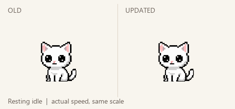

A little more life, a little more rest.
Old on the left, updated on the right. Same character scale, synchronized time, original playback speed. Resting idle has priority; tail chase and tail catch are unchanged.

Each finite gesture plays once and returns to quiet rest. The comparison repeats for review. Production does not repeat gestures this quickly. Resting idle includes long open-eyed pauses and a brief natural blink.
Expression and transition key frames · Verification and remaining limits